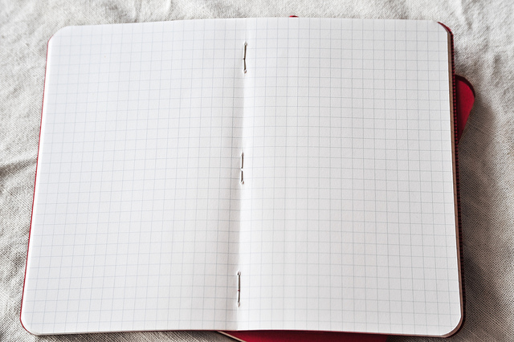

Webnotes
25 février 2018 Un outil pour prendre et partager des notes lors de ma navigation.
🌟
Quand je navigue en ligne, j'aime bien prendre des notes sur ce que je lis. C'est utile pour les retrouver plus tard. Il existe quelques outils pour ce genre de cas, mais j'ai vraiment eu du mal à trouver un outil qui faisais ce que je voulais, de la manière que je voulais, c'est à dire:
- enregistrer une sélection de texte ainsi que son contexte: heure, site web.
- fonctionner sur Firefox;
- stocker mes notes à un endroit que je contrôle (ce sont mes données, après tout !)
- rester en dehors de mon chemin: je suis en train de lire, pas en train d'organiser mes notes.
- automatiquement partager les notes sur une page web.
J'ai donc pris un peu de temps pour fabriquer mon outil de prises de notes, que j'ai baptisé « Webnotes ». C'est une extension Firefox, qui se configure assez simplement, et qui stocke les données dans une instance de Kinto.

C'est aussi simple que sélectionner du texte, faire « clic droit » puis « save as webnote », entrer un tag et le tour est joué !
Mes notes sont disponibles sur notes.notmyidea.org, et voici le lien vers les sources, si ça vous intéresse de regarder comment ça fonctionne !
L'image d'illustration utilisée est un travail de Kirsty Pang proposé sous license CC BY NC ND 2.0. Merci !